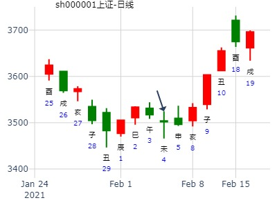
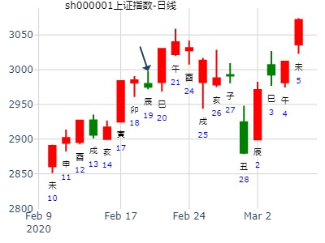
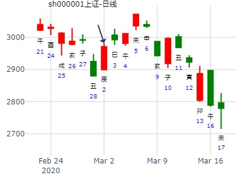
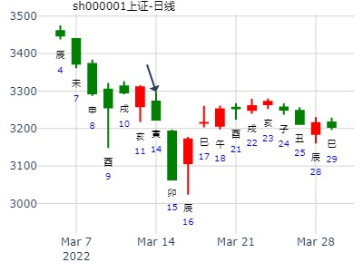
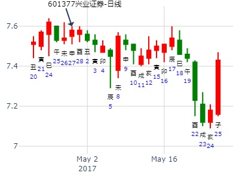
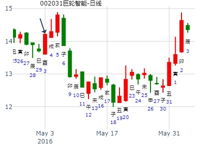
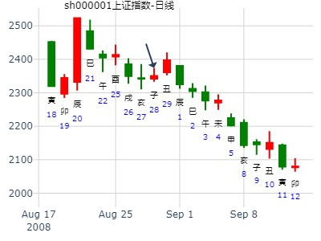

2018上证指数最高只能到3800
公历：2018年1月8日12时13分，星期一。
干支：丁酉年 癸丑月 庚子日 壬午时 (卦身：寅)
主 泽雷随(震宫-归魂) [空亡:辰、巳]
螣蛇 ▅▅ ▅▅ 妻财丁未土 应
勾陈 ▅▅▅▅▅ 官鬼丁酉金
朱雀 子孙庚午火 ▅▅▅▅▅ 父母丁亥水
青龙 ▅▅ ▅▅ 妻财庚辰土 世
玄武 ▅▅ ▅▅ 兄弟庚寅木
白虎 ▅▅▅▅▅ 父母庚子水
试测上证2021.2.5收盘百位数是几？
公历起卦时间：2021年2月4日8时17分 (电脑自动)
干支：辛丑年 庚寅月 癸未日 丙辰时 （日空：申酉）
神煞：驿马－巳 桃花－子 日禄－子 贵人－卯，巳
震宫：泽雷随 (归魂)
六神 伏神 本 卦
白虎 妻财丁未土 ▅▅ ▅▅ 应
螣蛇 官鬼丁酉金 ▅▅▅▅▅
勾陈 子孙庚午火 父母丁亥水 ▅▅▅▅▅
朱雀 妻财庚辰土 ▅▅ ▅▅ 世
青龙 兄弟庚寅木 ▅▅ ▅▅
玄武 父母庚子水 ▅▅▅▅▅

2018年股市测算[纯周易测算]--老陈测股
公历起卦时间：2018年2月4日6时19分 (手工指定】
立春：2018年02月04日05时38分
惊蛰：2018年03月05日23时25分
干支：戊戌年 甲寅月 丁卯日 癸卯时 （日空：戌亥）
神煞：驿马－巳 桃花－子 日禄－午 贵人－酉，亥
震宫：泽雷随 (归魂)
六神 伏神 本 卦
青龙 妻财丁未土 ▅▅ ▅▅ 应
玄武 官鬼丁酉金 ▅▅▅▅▅
白虎 子孙庚午火 父母丁亥水 ▅▅▅▅▅
腾蛇 妻财庚辰土 ▅▅ ▅▅ 世
勾陈 兄弟庚寅木 ▅▅ ▅▅
朱雀 父母庚子水 ▅▅▅▅▅
上证何年上到4000点？现在星期日3496.33
公历起卦时间：2021年2月7日19时39分 (电脑自动)
干支：辛丑年 庚寅月 丙戌日 戊戌时 （日空：午未）
神煞：驿马－申 桃花－卯 日禄－巳 贵人－酉，亥
震宫：泽雷随 (归魂)
六神 伏神 本 卦
青龙 妻财丁未土 ▅▅ ▅▅ 应
玄武 官鬼丁酉金 ▅▅▅▅▅
白虎 子孙庚午火 父母丁亥水 ▅▅▅▅▅
螣蛇 妻财庚辰土 ▅▅ ▅▅ 世
勾陈 兄弟庚寅木 ▅▅ ▅▅
朱雀 父母庚子水 ▅▅▅▅▅
随静卦_601456
占事: 国联证券在寅月
时间: 2022-2-8
干支: 壬寅年壬寅月壬辰日辛亥时 (旬空: 午未 )
随静卦(归魂)
六神 伏神 本 卦
白虎 ▅▅ ▅▅ 妻财未土 应
腾蛇 ▅▅▅▅▅ 官鬼酉金
勾陈 子孙午火▅▅▅▅▅ 父母亥水
朱雀 ▅▅ ▅▅ 妻财辰土 世
青龙 ▅▅ ▅▅ 兄弟寅木
玄武 ▅▅▅▅▅ 父母子水
占事：上证2.14收盘个位数z x
公历起卦时间：2020年2月16日17时13分 (电脑自动)
干支：庚子年 戊寅月 己丑日 癸酉时 （日空：午未）
神煞：驿马－亥 桃花－午 日禄－午 贵人－子，申
震宫：泽雷随 (归魂)
六神 伏神 本 卦
勾陈 妻财丁未土 ▅▅ ▅▅ 应
朱雀 官鬼丁酉金 ▅▅▅▅▅
青龙 子孙庚午火 父母丁亥水 ▅▅▅▅▅
玄武 妻财庚辰土 ▅▅ ▅▅ 世
白虎 兄弟庚寅木 ▅▅ ▅▅
螣蛇 父母庚子水 ▅▅▅▅▅
测上证2020.2.19上证走势？
公历起卦时间：2020年2月19日10时53分 (电脑自动)
干支：庚子年 戊寅月 壬辰日 乙巳时 （日空：午未）
神煞：驿马－寅 桃花－酉 日禄－亥 贵人－卯，巳
震宫：泽雷随 (归魂)
六神 伏神 本 卦
白虎 妻财丁未土 ▅▅ ▅▅ 应
螣蛇 官鬼丁酉金 ▅▅▅▅▅
勾陈 子孙庚午火 父母丁亥水 ▅▅▅▅▅
朱雀 妻财庚辰土 ▅▅ ▅▅ 世
青龙 兄弟庚寅木 ▅▅ ▅▅
玄武 父母庚子水 ▅▅▅▅▅

占事：试测3.2何时顶？
公历起卦时间：2020年3月2日11时14分 (电脑自动)
干支：庚子年 戊寅月 甲辰日 庚午时 （日空：寅卯）
神煞：驿马－寅 桃花－酉 日禄－寅 贵人－丑，未
震宫：泽雷随 (归魂)
六神 伏神 本 卦
玄武 妻财丁未土 ▅▅ ▅▅ 应
白虎 官鬼丁酉金 ▅▅▅▅▅
螣蛇 子孙庚午火 父母丁亥水 ▅▅▅▅▅
勾陈 妻财庚辰土 ▅▅ ▅▅ 世
朱雀 兄弟庚寅木 ▅▅ ▅▅
青龙 父母庚子水 ▅▅▅▅▅

硬币年卦122-112 风生水起
占事：世联行16.3.6-17.3.5
起卦方式：手动摇卦
公历时间：2016年3月6日7时55分
干 支：丙申年 辛卯月 丁亥日 甲辰时
旬 空：辰巳 午未 午未 寅卯
震宫：泽雷随（归魂）
六神 伏 神 【本 卦】
青龙 ▄▄ ▄▄ 妻财丁未土 应
玄武 ▄▄▄▄▄ 官鬼丁酉金
白虎 子孙庚午火 ▄▄▄▄▄ 父母丁亥水
螣蛇 ▄▄ ▄▄ 妻财庚辰土 世
勾陈 ▄▄ ▄▄ 兄弟庚寅木
朱雀 ▄▄▄▄▄ 父母庚子水
手摇上海股市今天的行情走势到底如何？
壬寅 癸卯 丙寅 壬辰 (戌亥空)
壬寅年正月十二(2022/03/14 08:42:42)
泽雷随
青龙 妻财未土 ∥ 应
玄武 官鬼酉金 ／
子孙庚午：白虎 父母丁亥 ／
腾蛇 妻财辰土 ∥ 世
勾陈 兄弟寅木 ∥
朱雀 父母子水 ／
夲来昨天就想起卦,但昨天日月相克,
而今天的日子日月五行相同,便于解读,故今早起卦

随静卦,东田微到五月底
时间: 2023-4-19
时间: 2023-04-19
干支: 癸卯年丙辰月丁未日 (旬空: 寅卯 )
随静卦(归魂)
六神 伏神 本 卦
青龙 ▅▅ ▅▅ 妻财未土 应
玄武 ▅▅▅▅▅ 官鬼酉金
白虎 子孙午火▅▅▅▅▅ 父母亥水
腾蛇 ▅▅ ▅▅ 妻财辰土 世
勾陈 ▅▅ ▅▅ 兄弟寅木
朱雀 ▅▅▅▅▅ 父母子水
占事：000980金马股份下周涨跌
公历起卦时间：2016年4月22日16时22分 (电脑自动)
干支：丙申年 壬辰月 甲戌日 壬申时 （日空：申酉）
神煞：驿马－申 桃花－卯 日禄－寅 贵人－丑，未
震宫：泽雷随 (归魂)
六神 伏神 本 卦
玄武 妻财丁未土 ▅▅ ▅▅ 应
白虎 官鬼丁酉金 ▅▅▅▅▅
腾蛇 子孙庚午火 父母丁亥水 ▅▅▅▅▅
勾陈 妻财庚辰土 ▅▅ ▅▅ 世
朱雀 兄弟庚寅木 ▅▅ ▅▅
青龙 父母庚子水 ▅▅▅▅▅
泽雷随，小梅测二周内大盘走势如何？
起卦时间：2014年4月23日15时23分 (手工指定)
干支：甲午年 戊辰月 甲子日 壬申时 （日空：戌亥）
震宫：泽雷随 (归魂)
六神 伏神 本 卦
玄武 妻财丁未土 ▅▅ ▅▅ 应
白虎 官鬼丁酉金 ▅▅▅▅▅
腾蛇 子孙庚午火 父母丁亥水 ▅▅▅▅▅
勾陈 妻财庚辰土 ▅▅ ▅▅ 世
朱雀 兄弟庚寅木 ▅▅ ▅▅
青龙 父母庚子水 ▅▅▅▅▅
巳日把亥水飞神冲实，牢牢压住伏神出不来。
占事：兴业证券未来两个月如何走？
公历起卦时间：2017年4月27日11时10分 (电脑自动)
干支：丁酉年 甲辰月 甲申日 庚午时 （日空：午未）
震宫：泽雷随 (归魂)
六神 伏神 本 卦
玄武 妻财丁未土 ▅▅ ▅▅ 应
白虎 官鬼丁酉金 ▅▅▅▅▅
腾蛇 子孙庚午火 父母丁亥水 ▅▅▅▅▅
勾陈 妻财庚辰土 ▅▅ ▅▅ 世
朱雀 兄弟庚寅木 ▅▅ ▅▅
青龙 父母庚子水 ▅▅▅▅▅
午未空，午月才有戏。

高送转10送20价格最低，机器人。超跌。
占事：002031巨轮智能下周2345涨跌
公历起卦时间：2016年4月30日10时46分 (电脑自动)
干支：丙申年 壬辰月 壬午日 乙巳时 （日空：申酉）
神煞：驿马－申 桃花－卯 日禄－亥 贵人－卯，巳
震宫：泽雷随 (归魂)
六神 伏神 本 卦
白虎 妻财丁未土 ▅▅ ▅▅ 应
腾蛇 官鬼丁酉金 ▅▅▅▅▅
勾陈 子孙庚午火 父母丁亥水 ▅▅▅▅▅
朱雀 妻财庚辰土 ▅▅ ▅▅ 世
青龙 兄弟庚寅木 ▅▅ ▅▅
玄武 父母庚子水 ▅▅▅▅▅
酉日合起辰？子日子孙月破。

515航天长峰何时涨停？
公历起卦时间：2020年5月15日8时27分 (电脑自动)
干支：庚子年 辛巳月 戊午日 丙辰时 （日空：子丑）
神煞：驿马－申 桃花－卯 日禄－巳 贵人－丑，未
震宫：泽雷随 (归魂)
六神 伏神 本 卦
朱雀 妻财丁未土 ▅▅ ▅▅ 应
青龙 官鬼丁酉金 ▅▅▅▅▅
玄武 子孙庚午火 父母丁亥水 ▅▅▅▅▅
白虎 妻财庚辰土 ▅▅ ▅▅ 世
螣蛇 兄弟庚寅木 ▅▅ ▅▅
勾陈 父母庚子水 ▅▅▅▅▅
上证5.23星期一收盘走势？
公历起卦时间：2022年5月20日12时49分 (电脑自动)
干支：壬寅年 乙巳月 癸酉日 戊午时 （日空：戌亥）
神煞：驿马－亥 桃花－午 日禄－子 贵人－卯，巳
震宫：泽雷随 (归魂)
六神 伏神 本 卦
白虎 妻财丁未土 ▅▅ ▅▅ 应
螣蛇 官鬼丁酉金 ▅▅▅▅▅
勾陈 子孙庚午火 父母丁亥水 ▅▅▅▅▅
朱雀 妻财庚辰土 ▅▅ ▅▅ 世
青龙 兄弟庚寅木 ▅▅ ▅▅
玄武 父母庚子水 ▅▅▅▅▅
测6.2日002600领益智造收盘走势？
公历起卦时间：2021年6月2日8时23分 (电脑自动)
干支：辛丑年 癸巳月 辛巳日 壬辰时 （日空：申酉）
神煞：驿马－亥 桃花－午 日禄－酉 贵人－寅，午
震宫：泽雷随 (归魂)
六神 伏神 本 卦
螣蛇 妻财丁未土 ▅▅ ▅▅ 应
勾陈 官鬼丁酉金 ▅▅▅▅▅
朱雀 子孙庚午火 父母丁亥水 ▅▅▅▅▅
青龙 妻财庚辰土 ▅▅ ▅▅ 世
玄武 兄弟庚寅木 ▅▅ ▅▅
白虎 父母庚子水 ▅▅▅▅▅
wxxs 上证6.10收盘走势？
公历起卦时间：2022年6月9日19时26分 (电脑自动)
干支：壬寅年 丙午月 癸巳日 壬戌时 （日空：午未）
神煞：驿马－亥 桃花－午 日禄－子 贵人－卯，巳
震宫：泽雷随 (归魂)
六神 伏神 本 卦
白虎 妻财丁未土 ▅▅ ▅▅ 应
螣蛇 官鬼丁酉金 ▅▅▅▅▅
勾陈 子孙庚午火 父母丁亥水 ▅▅▅▅▅
朱雀 妻财庚辰土 ▅▅ ▅▅ 世
青龙 兄弟庚寅木 ▅▅ ▅▅
玄武 父母庚子水 ▅▅▅▅▅
文件名: 五粮液2周走势？泽雷随静卦。6周周卦
日期 : 2019-06-11
占事: 五粮液二周走势？
时间: 2019-06-11
干支: 己亥年庚午月己卯日 (旬空: 申酉 )
随静卦
(归魂)
六神 伏神 本 卦
勾陈 ▅▅ ▅▅ 妻财未土 应
朱雀 ▅▅▅▅▅ 官鬼酉金
青龙 子孙午火▅▅▅▅▅ 父母亥水
玄武 ▅▅ ▅▅ 妻财辰土 世
白虎 ▅▅ ▅▅ 兄弟寅木
腾蛇 ▅▅▅▅▅ 父母子水
主题：上工申贝[600843]，未来涨跌走势？
丁亥 丁未 癸卯 丙辰 (辰巳空)
丁亥年五月廿四(2007/07/08 08:32:12)
泽雷随
白虎 妻财未土 ∥ 应
腾蛇 官鬼酉金
勾陈 父母亥水 ／
朱雀 妻财辰土 ∥ 世
青龙 兄弟寅木 ∥
玄武 父母子水 ／
测000540中天金融是否能够完成重大资产重组？
公历起卦时间：2020年7月25日11时50分 (手工指定)
干支：庚子年 癸未月 己巳日 庚午时 （日空：戌亥）
神煞：驿马－亥 桃花－午 日禄－午 贵人－子，申
震宫：泽雷随 (归魂)
六神 伏神 本 卦
勾陈 妻财丁未土 ▅▅ ▅▅ 应
朱雀 官鬼丁酉金 ▅▅▅▅▅
青龙 子孙庚午火 父母丁亥水 ▅▅▅▅▅
玄武 妻财庚辰土 ▅▅ ▅▅ 世
白虎 兄弟庚寅木 ▅▅ ▅▅
螣蛇 父母庚子水 ▅▅▅▅▅
占事：00280911日何时能申购上
起卦方式：手动摇卦
六爻排盘http://paipan.9d19.com/6y.asp
公历时间：2016年8月11日9时30分
农历时间：丙申年 七月初九日巳时
干 支：丙申年 丙申月 乙丑日 辛巳时
旬 空：辰巳 辰巳 戌亥 申酉
神 煞：驿马─亥 桃花─午 日禄─卯 贵人─子，申
算命最准的网站www.9d19.com
震宫：泽雷随（归魂）
六神 伏 神 【本 卦】
玄武 ▄▄ ▄▄ 妻财丁未土 应
白虎 ▄▄▄▄▄ 官鬼丁酉金
螣蛇 子孙庚午火 ▄▄▄▄▄ 父母丁亥水
勾陈 ▄▄ ▄▄ 妻财庚辰土 世
朱雀 ▄▄ ▄▄ 兄弟庚寅木
青龙 ▄▄▄▄▄ 父母庚子水
2021年第35周 8月23至8月27日个股300491预测汇总
又起一卦
公历时间：2021年8月21日20时44分
干 支：辛丑年 丙申月 辛丑日 戊戌时
旬 空：辰巳 辰巳 辰巳 辰巳
震宫：泽雷随（归魂）
六神 伏 神 【本 卦】
螣蛇 ▄▄ ▄▄ 妻财丁未土 应
勾陈 ▄▄▄▄▄ 官鬼丁酉金
朱雀 子孙庚午火 ▄▄▄▄▄ 父母丁亥水
青龙 ▄▄ ▄▄ 妻财庚辰土 世
玄武 ▄▄ ▄▄ 兄弟庚寅木
白虎 ▄▄▄▄▄ 父母庚子水
世爻空，戌日冲实
以下是引用qaqahappy在2008-8-28 9:27:00的发言：
主题：2008-08-28上证指数
戊子 庚申 庚子 辛巳 (辰巳空)
戊子年七月廿八(2008/08/28 09:28:13)
泽雷随
腾蛇 妻财未土 ∥ 应
勾陈 官鬼酉金 ／ 子孙午火：
朱雀 父母亥水 ／
青龙 妻财辰土 ∥ 世
玄武 兄弟寅木 ∥
白虎 父母子水 ／
是开盘前三分钟起的卦？

2012年第4季度大盘走势（泽雷随（归魂））?wukevin
占事：2012年第4季度大盘走势?
起卦方式：手动摇卦??
公历时间：2012年10月9日22时6分????
干 支：壬辰年?庚戌月?癸卯日?癸亥时
旬 空：午未???寅卯???(辰巳)???子丑??
??
震宫：泽雷随（归魂）
六神? 伏 神 【本 卦】
白虎 ▄▄??▄▄ 妻财丁未土 应
螣蛇 ▄▄▄▄▄ 官鬼丁酉金
勾陈 子孙庚午火 ▄▄▄▄▄ 父母丁亥水
朱雀 ▄▄??▄▄ 妻财庚辰土 世
青龙 ▄▄??▄▄ 兄弟庚寅木
玄武 ▄▄▄▄▄ 父母庚子水
马后炮：
戌月世爻辰土月破，但毕竟是助土，横盘。（或解释为冲辰土暗动，但同时墓了午火，于是横盘）
亥月飞神太强，子孙伏神无法出伏。一路跌。
子月大涨。（疑似冲子孙午火出了月墓）（另注：此处不论以辰年支还是月支来定午火旺衰，均是衰）
丑月冲未土暗动，大涨。
占事：10.9上证大盘走势
起卦方式：手动摇卦 易经股市论坛
公历时间：2014年10月9日8时34分
农历时间：甲午年 九月 十六日 辰时
干 支：甲午年 甲戌月 癸丑日 丙辰时
旬 空：辰巳 申酉 (寅卯) 子丑
震宫：泽雷随（归魂）
六神 伏 神 【本 卦】
白虎 ▄▄ ▄▄ 妻财丁未土 应
螣蛇 ▄▄▄▄▄ 官鬼丁酉金
勾陈 子孙庚午火 ▄▄▄▄▄ 父母丁亥水
朱雀 ▄▄ ▄▄ 妻财庚辰土 世
青龙 ▄▄ ▄▄ 兄弟庚寅木
玄武 ▄▄▄▄▄ 父母庚子水
世爻应爻月破，日破。
星，先跌后涨。
占事：000902中国服装17日18日涨跌
公历起卦时间：2013年10月16日11时33分 (在线摇卦)
干支：癸巳年 壬戌月 乙卯日 壬午时 （日空：子丑）
神煞：驿马－巳 桃花－子 日禄－卯 贵人－子，申
震宫：泽雷随 (归魂)
六神 伏神 本 卦
玄武 妻财丁未土 ▅▅ ▅▅ 应
白虎 官鬼丁酉金 ▅▅▅▅▅
腾蛇 子孙庚午火 父母丁亥水 ▅▅▅▅▅
勾陈 妻财庚辰土 ▅▅ ▅▅ 世
朱雀 兄弟庚寅木 ▅▅ ▅▅
青龙 父母庚子水 ▅▅▅▅▅
占事：002256彩虹精化31日涨跌
公历起卦时间：2013年10月30日15时21分 (电脑自动)
干支：癸巳年 壬戌月 己巳日 壬申时 （日空：戌亥）
神煞：驿马－亥 桃花－午 日禄－午 贵人－子，申
震宫：泽雷随 (归魂)
六神 伏神 本 卦
勾陈 妻财丁未土 ▅▅ ▅▅ 应
朱雀 官鬼丁酉金 ▅▅▅▅▅
青龙 子孙庚午火 父母丁亥水 ▅▅▅▅▅
玄武 妻财庚辰土 ▅▅ ▅▅ 世
白虎 兄弟庚寅木 ▅▅ ▅▅
腾蛇 父母庚子水 ▅▅▅▅▅
随静卦_600595_同一天问卦两次
占事:我下周一买入中孚实业拿到22号能赚钱吗？
时间: 2016-11-11 14：34
干支: 丙申年己亥月丁酉日丁未时 (旬空: 辰巳 )
随静卦
(归魂)
六神 伏神 本 卦
青龙 ▅▅ ▅▅ 妻财未土 应
玄武 ▅▅▅▅▅ 官鬼酉金
白虎 子孙午火▅▅▅▅▅ 父母亥水
腾蛇 ▅▅ ▅▅ 妻财辰土 世
勾陈 ▅▅ ▅▅ 兄弟寅木
朱雀 ▅▅▅▅▅ 父母子水
妻财旬空，反而无财。
时间: 2016-11-11 14：41
干支: 丙申年己亥月丁酉日 (旬空: 辰巳 )
师静卦
(归魂)
六神 伏神 本 卦
青龙 ▅▅ ▅▅ 父母酉金 应
玄武 ▅▅ ▅▅ 兄弟亥水
白虎 ▅▅ ▅▅ 官鬼丑土
腾蛇 ▅▅ ▅▅ 妻财午火 世
勾陈 ▅▅▅▅▅ 官鬼辰土
朱雀 ▅▅ ▅▅ 子孙寅木
世爻旬空

占事：新华网明天
起卦方式：手工指定
公历时间：2019年11月14日15时7分 农历时间：己亥年 十月十八日申时
干 支：庚子年 癸亥月 乙卯日 甲申时
旬 空：辰巳 子丑 子丑 午未
神 煞：驿马─巳 桃花─子 日禄─卯 贵人─子，申
震宫：泽雷随（归魂）
六神 伏 神 【本 卦】
玄武 ▄▄ ▄▄ 妻财丁未土 应
白虎 ▄▄▄▄▄ 官鬼丁酉金
螣蛇 子孙庚午火 ▄▄▄▄▄ 父母丁亥水
勾陈 ▄▄ ▄▄ 妻财庚辰土 世
朱雀 ▄▄ ▄▄ 兄弟庚寅木
青龙 ▄▄▄▄▄ 父母庚子水
占事：601038一拖股份明天涨跌
公历起卦时间：2014年11月26日16时50分 (电脑自动)
干支：甲午年 乙亥月 辛丑日 丙申时 （日空：辰巳）
神煞：驿马－亥 桃花－午 日禄－酉 贵人－寅，午
震宫：泽雷随 (归魂)
六神 伏神 本 卦
腾蛇 妻财丁未土 ▅▅ ▅▅ 应
勾陈 官鬼丁酉金 ▅▅▅▅▅
朱雀 子孙庚午火 父母丁亥水 ▅▅▅▅▅
青龙 妻财庚辰土 ▅▅ ▅▅ 世
玄武 兄弟庚寅木 ▅▅ ▅▅
白虎 父母庚子水 ▅▅▅▅▅
占事：12月13-17日大盘涨跌？
公历时间：2010年12月10日15时11分 星期五
农历时间：庚寅年十一月初五申时
干支：庚寅年 戊子月 甲午日 壬申时 (旬空：辰巳)
神煞：驿马—申 桃花—卯 日禄—寅 贵人—丑，未
震宫：泽雷随（归魂）
六神 伏 神 【本 卦】
玄武 ▅▅ ▅▅ 妻财丁未土 应
白虎 ▅▅▅▅▅ 官鬼丁酉金
螣蛇 子孙庚午火 ▅▅▅▅▅ 父母丁亥水
勾陈 ▅▅ ▅▅ 妻财庚辰土 世
朱雀 ▅▅ ▅▅ 兄弟庚寅木
青龙 ▅▅▅▅▅ 父母庚子水
占事：万科未来两周走势旬空经典
时间: 2015-12-14
干支: 乙未年戊子月甲子日 (旬空: 戌亥 )
随静卦(归魂)
六神 伏神 本 卦
玄武 ▅▅ ▅▅ 妻财未土 应
白虎 ▅▅▅▅▅ 官鬼酉金
腾蛇 子孙午火▅▅▅▅▅ 父母亥水
勾陈 ▅▅ ▅▅ 妻财辰土 世
朱雀 ▅▅ ▅▅ 兄弟寅木
青龙 ▅▅▅▅▅ 父母子水
追梦人
摇卦后涨到高点，然后关了半年放出来大跌。
今天20日财运
手摇卦
公历时间：2019年12月20日8时55分
干 支：己亥年 丙子月 辛卯日 壬辰时
旬 空：辰巳 申酉 午未 午未
神 煞：驿马─巳 桃花─子 日禄─酉 贵人─寅，午
中国预测网纳甲六爻排盘
震宫：泽雷随（归魂）
六神 伏 神 【本 卦】
螣蛇 ▄▄ ▄▄ 妻财丁未土 应
勾陈 ▄▄▄▄▄ 官鬼丁酉金
朱雀 子孙庚午火 ▄▄▄▄▄ 父母丁亥水
青龙 ▄▄ ▄▄ 妻财庚辰土 世
玄武 ▄▄ ▄▄ 兄弟庚寅木
白虎 ▄▄▄▄▄ 父母庚子水